Hay ocasiones en la cuales necesitamos "esconder" ciertos datos que son sensibles y/ confidenciales, y no dejar que cualquier usuario los vea. Para eso utilizamos la encriptación de datos.
En Oracle, la encriptación de datos se llama Data Masking o Redacción de datos.
En este módulo, vamos a ver tres maneras que tiene Oracle para encriptar datos:
- Redacción Total
- Redacción Parcial
- Redacción Aleatoria
Para hacer la explicación del tema, vamos a crear un nuevo usuario y le damos todos los privilegios:
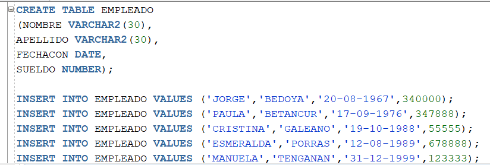
Luego, conectados con el usuario recién creado, vamos a crear una tabla y le vamos a insertar algunas tuplas:
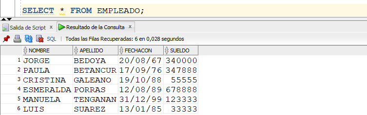
Redacción Total
La redacción total se refiere a ocultar totalmente el valor de un campo de una tabla, es decir, con este tipo de redacción el valor de un campo se encripta en su totalidad.
Miremos un ejemplo de ello, para que entendamos el procedimiento para configurar este tipo de redacción.
Desde el usuario SYS, vamos a crear la siguiente política de redacción:
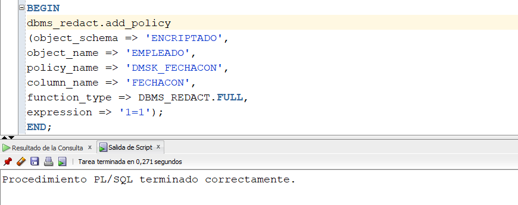
Crear una política de redacción es ejecutar un procedimiento almacenado, configurando dicha política. En la política anterior, podemos ver lo siguiente:
- dbms_redact.add_policy: el procedimiento para crear una política de redacción se llama dbms_redact y éste tiene una función llamada add_policy, la cual permite crear una nueva política de redacción.
- object_schema: Esquema donde se va a crear la política, en este caso, ENCRIPTADO.
- object_name: Nombre del objeto, en este caso tabla, donde se aplicará la política de redacción.
- policy_name: Nombre de la política a crear.
- column_name: Nombre del campo al cual se le va a aplicar la política de redacción. En este caso, vamos a encriptar, en forma total, el valor del campo FECHACON.
- function_type: Tipo de redacción a crear. Como vemos, en este caso, es FULL.
- expression: Permite configurar a quien (o quienes) les aplica la política. En este caso, 1=1 significa una expresión que siempre es verdadera, y por lo tanto aplica para todos los usuarios, incluido el usuario ENCRIPTADO, dueño de la tabla.
Después de haber creado la política anterior, desde el usuario ENCRIPTADO, hagamos un SELECT a la tabla EMPLEADO:
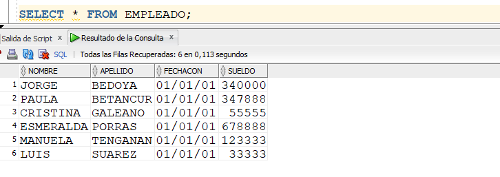
Podemos observar que el valor del campo FECHACON ha sido "ocultado". A todos los empleados les puso dicha fecha en "01/01/01". Nótese como se dijo antes que inclusive para el usuario ENCRIPTADO, dueño de la tabla, quedó el campo "ocultado".
Borrar una Política de Redacción
Para borrar la política de redacción creada anteriormente, ejecutamos el siguiente script, el cual utiliza la función drop_policy:
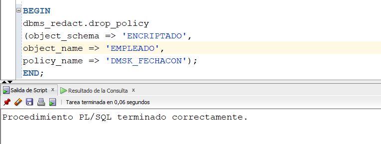
A continuación vamos a crear la misma política anterior. La diferencia es que va a aplicar para todos los usuarios, menos para el usuario ENCRIPTADO, el dueño de la tabla.
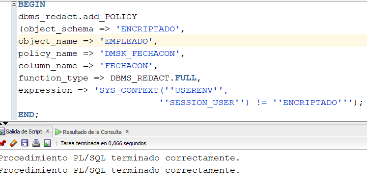
Lo único que cambia es el parámetro expression, donde se dice que aplica para todos los usuarios diferentes a ENCRIPTADO.
En este momento si el usuario ENCRIPTADO hace un SELECT a la tabla, aparece el campo sin encriptar. En cambio, si se hace el mismo SELECT desde otro usuario, dicho campo aparece en 01/01/01.
Como se puede consultar cuáles políticas de redacción hay creadas?
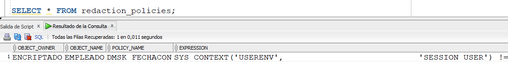
En la vista REDACTION_POLICIES podemos mirar la información de cada política de redacción creada.
También hay una manera de consultar cuáles son los valores por default que saldrán en los campos encriptados. Estos valores por default son por el tipo de datos del campo. La consulta es la siguiente:
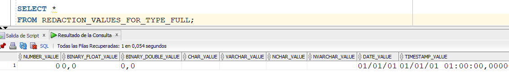
En el resultado anterior vemos que cuando se encripta un campo tipo date, aparece por default 01/01/01, que era lo que sucedía en el ejemplo anterior que hemos hecho. También vemos que cuando se encripta un campo tipo varchar, se pone un espacio en blanco, un valor numérico, pondrá un cero, etc.
Estos valores por defecto pueden ser cambiados. Este cambio se hace de la siguiente manera:
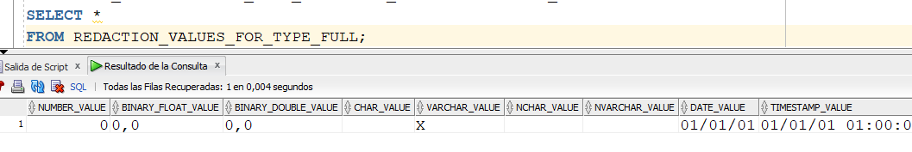
Acá estamos cambiando el valor por default de los campos tipo varchar.
Redacción Parcial
La redacción parcial corresponde a encriptar una parte del valor de un campo, no lo encripta en su totalidad.
Para hacer el ejemplo, el usuario ENCRIPTADO va a crear otra tabla y le va a insertar datos:
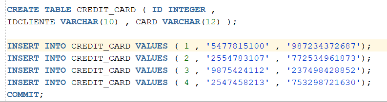
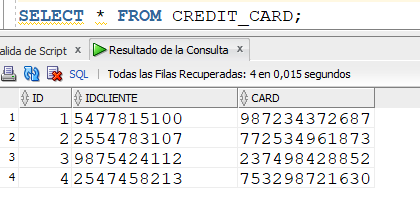
Dicha tabla tiene datos de los numeros de tarjetas de créditos de varios clientes.
Vamos a crear, desde SYS, la siguiente política de redacción:
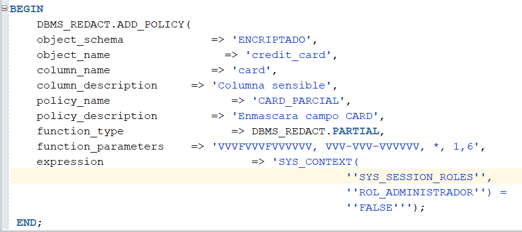
Con respecto al ejemplo anterior que hicimos, esta política tiene algunos aspectos nuevos:
- column_description: Descripción del campo que se va a encriptar.
- policy_description: Descripción de la política que se está creando.
- function_type: Redacción parcial.
- function_parameters: Formato con el cual se va a encriptar el campo. En este caso, como se está encriptando un campo de tipo VARCHAR, el primer parámetro es el formato del dato que se va a encriptar, el segundo es el formato como debe quedar el dato encriptado, el tercero es el caracter con el que se va a encriptar (*), el cuarto es la posición del string donde se va a empezar a encriptar y el quinto es posición del string hasta donde se va a encriptar. Si tenemos un valor numérico que vamos a encriptar, por ejemplo, el valor es 4598780, y tenemos dentro de function_parameters lo siguiente: '2, 1, 4', el valor encriptado sería 2222780, es decir, reemplace con un 2 los cuatro primeros dígitos del número. Por otra parte, si tenemos una fecha que se va a encriptar (tipo date), por ejemplo, el valor es 29-08-2011, y teenmos dentro de function_parameters lo siguiente: 'Md02Y', el valor encriptado sería 02-08-2011, es decir, reemplace el día por 02, y el mes y año dejarlos igual.
- expression: La política aplicará para los usuarios que no (FALSE) tengan el rol denominado ROL_ADMINISTRADOR.
Para mirar el funcionamiento de la política, desde SYS vamos a crear los siguientes usuarios.
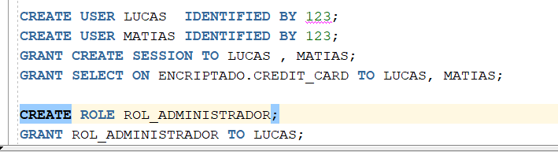
Como se puede observar, a los dos usuarios creados, LUCAS y MATIAS, se les da permiso para consultar la tabla CREDIT_CARD del usuario ENCRIPTADO. Y al usuario LUCAS se le da el rol denominado ROL_ADMINISTRADOR.
Desde el usuario LUCAS, hagamos un SELECT a la tabla:
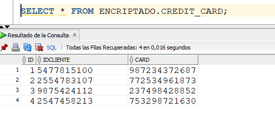
LUCAS, por tener el rol ROL_ADMINISTRADOR, no le aplica la política de redacción. Por eso, el campo CARD no aparece encriptado.
Ahora, hagamos la misma consulta por el usuario MATIAS:
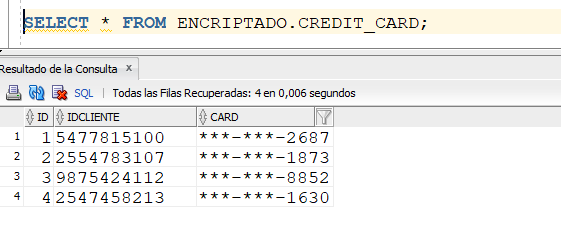
Podemos observar que los valores del campo CREDIT han sido encriptados parcialmente, es decir, los últimos 4 dígitos del valor del campo son mostrados. Los demás dígitos son encriptados con * y -.
Podemos modificar una política de redacción que ya existe. Lo hacemos de la siguiente manera:
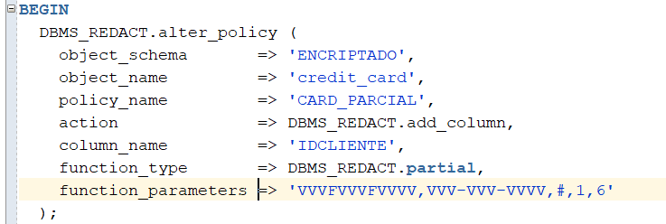
Se usa la función alter_policy. En este caso, estamos encriptando, en forma parcial, el campo IDCLIENTE. Si volvemos a consultar los datos de la tabla desde el usuario MATIAS, sale lo siguiente:
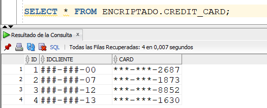
Redacción Aleatoria
La redacción aleatoria corresponde a que el valor del campo no se muestra tal y como es, y dicho valor es reemplazado por un valor aleatorio. Miremos un ejemplo.
Desde el usuario ENCRIPTADO, vamos a crear una nueva tabla.
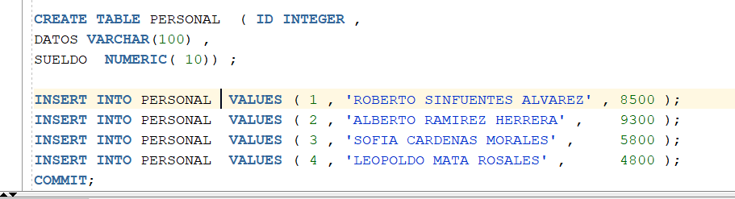
Vamos a crear la siguiente política de redacción:
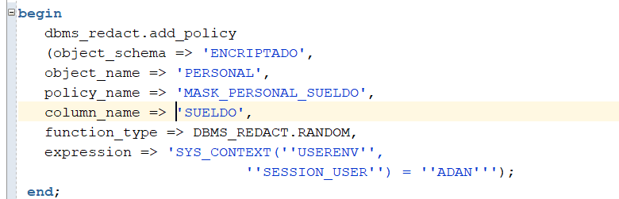
Como se puede ver, al campo SUELDO, de la tabla PERSONAL, del usuario ENCRIPTADO, se le va a hacer un encriptamiento aleatorio (RANDOM). Esta política se le va a aplicar solamente al usuario llamado ADAN.
Vamos a crear al usuario ADAN y le vamos a dar los correspondientes permisos:
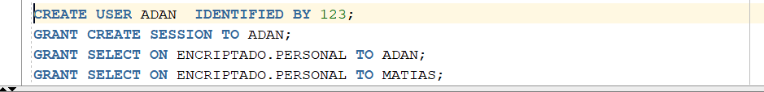
Ahora, desde el usuario MATIAS, hagamos un SELECT a la tabla:
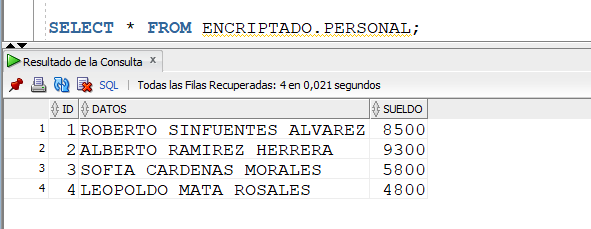
Podemos mirar que el sueldo no salió encriptado.
Ahora, hagamos la misma consulta por el usuario ADAN. El resultado es que el valor del campo sueldo no se "esconde" pero sale un valor aleatorio para dicho campo. 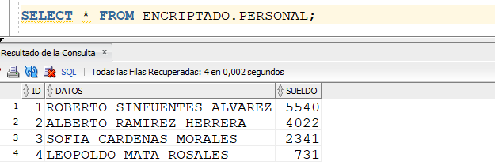
De hecho, si volvemos a ejecutar el SELECT, salen otros valores diferentes a los anteriores.
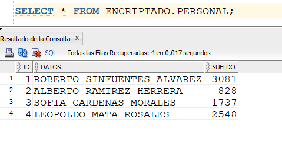